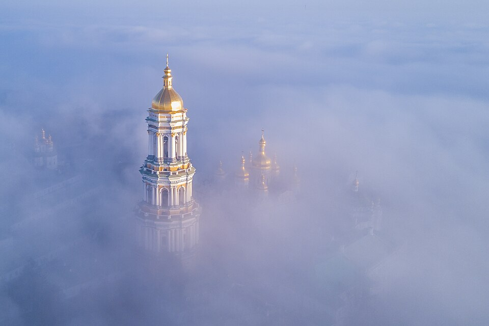
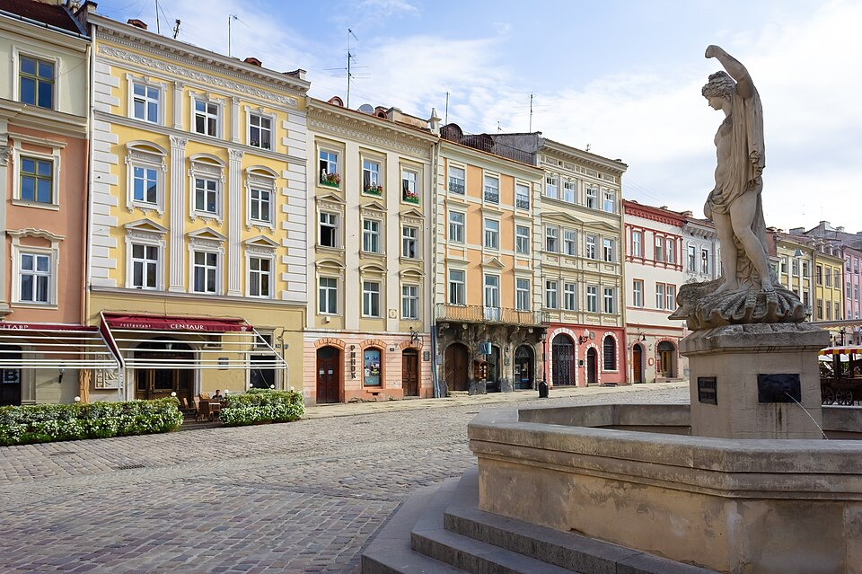
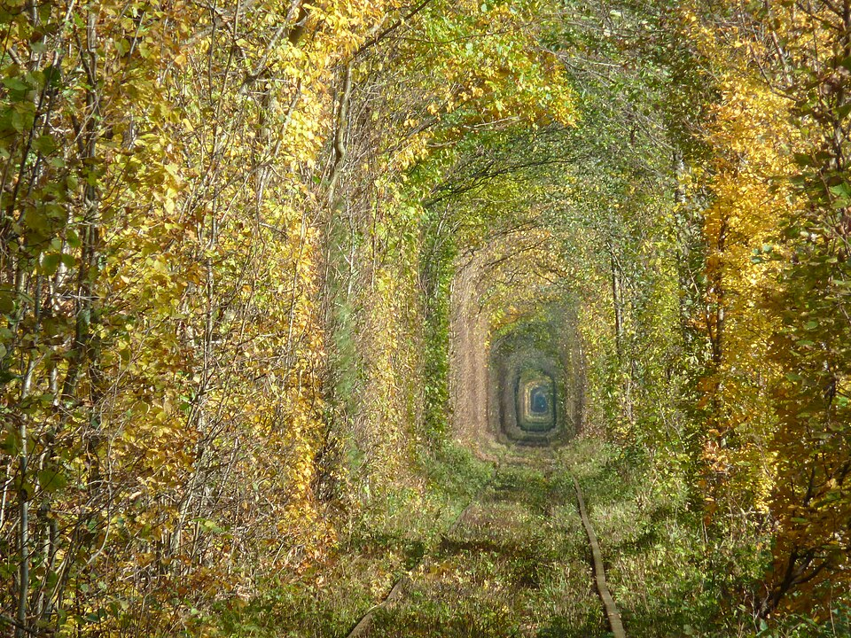
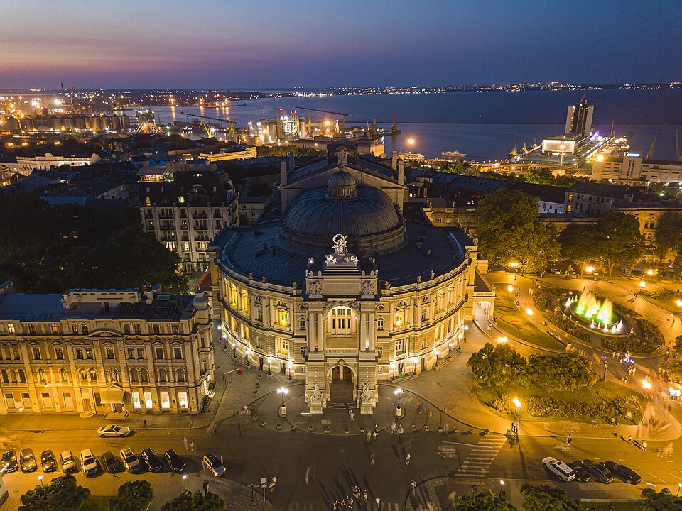

Ukraine우크라이나 Україна
흑해 연안에서 카르파티아 산맥까지 이어진 동유럽의 나라
- Capital
- 키이우 (Київ)
- Language
- 우크라이나어
- Currency
- 흐리우냐 (UAH)

안개 속 키이우 페체르스크 라브라Kyiv Pechersk Lavra in the fog
르비우 구시가지 시장광장Market Square, Lviv
클레반 사랑의 터널Tunnel of Love, Klevan
오데사 오페라 극장Odesa Opera and Ballet TheatreExplore Ukraine
우크라이나 더 알아보기
우크라이나는 흑해 연안과 카르파티아 산맥에 걸친 동유럽의 국가다. 키이우 루스의 중세유산, 카르파티아 산악문화, 코자크 전통, 비옥한 흑토 지대, 산업도시의 역사가 다양한 지역 정체성을 형성했다. 1991년 독립 이후 현재의 우크라이나는 2014년부터 계속된 러시아의 침략과 2022년 전면 침공으로 심각한 인명·경제·문화유산 피해를 겪고 있다. 국가 소개에서 문화적 풍요로움과 오늘날의 현실을 동시에 다루되, 주민을 전쟁 서사로만 환원하지 않는다.
Latest updates
우크라이나 최근 뉴스
-
러시아, 크림대교 ‘보복’ 예고 하루 만에 우크라이나 전역 대규모 공습…키이우 다리 3곳 피격, 최소 8명 사망
키이우인디펜던트에 따르면 20일 새벽 러시아가 순항미사일 84발, 드론 404기와 탄도미사일을 발사했고, 우크라이나 공군은 순항미사일 79발과 드론 380기를 요격했다고 밝혔습니다. 23개 지점이 타격을 받았습니다.
-
트럼프·푸틴·시진핑, 선전서 첫 3자 회담…키이우 ‘전쟁 지속 부추길 것’ 비판, 크림대교 이틀 만에 재피격
키이우인디펜던트에 따르면 트럼프 대통령은 19일 중국 선전에서 푸틴, 시진핑과 처음으로 3자 회담을 가졌습니다. 앞서 푸틴과 40분간 따로 만났고, 크렘린의 우샤코프 보좌관은 양자 회담의 주제가 우크라이나 전쟁이었다고 밝혔습니다.
-
EU, 우크라이나에 2027년 450억 유로 추가 대출 제안…미 국방차관 ‘심층 타격 효과 없다’ 발언에 독일·영국 반박
키이우인디펜던트가 입수한 초안에 따르면 유럽집행위는 18일 우크라이나에 2027년 450억 유로 규모 대출을 제안할 예정입니다. 250억 유로는 방위산업, 200억 유로는 거시금융지원과 우크라이나 시설 지원에 쓰이며 EU 예산 여유분이 보증합니다.